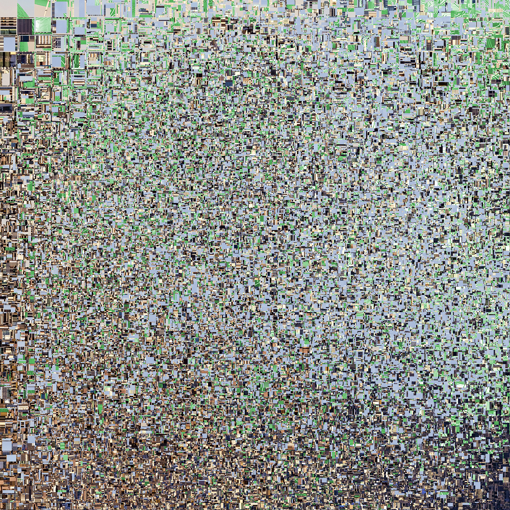

Demo image scramble/unscramble.
Currently will square all images. Works only on Chrome.
Use matrix of size 29 to unscramble default image.
For larger matrix sizes the process takes from a few minutes to a few hours, so be patient.
For reference, default image takes 1 minute to unscramble on a desktop.
Matrix size:
